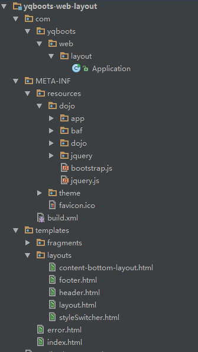

Project Layout defines the common layout template and all the files that support the YQBoots Framework.

After you run spring-boot:run with profile "test" for the "project-layout" sub-module,
you will have the application running at http://localhost:8080 too!
That's the most fantastic part of the YQBoots Framework -- most of the modules can be launched standalone, there is less dependencies between them while developing or testing for different modules.
Page head contains metadata, favicon, title and CSS links.
Page footer contains copy right and social links.